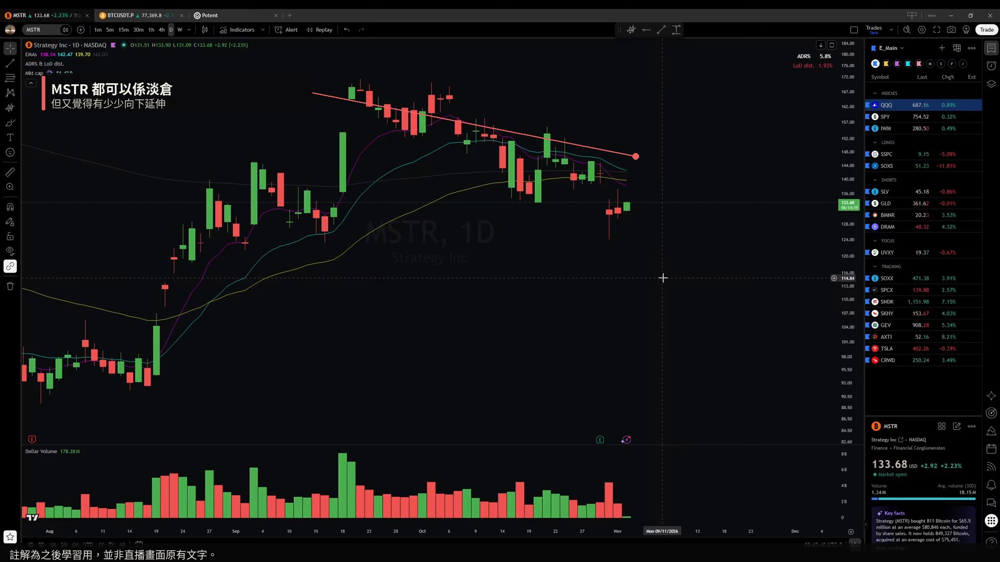
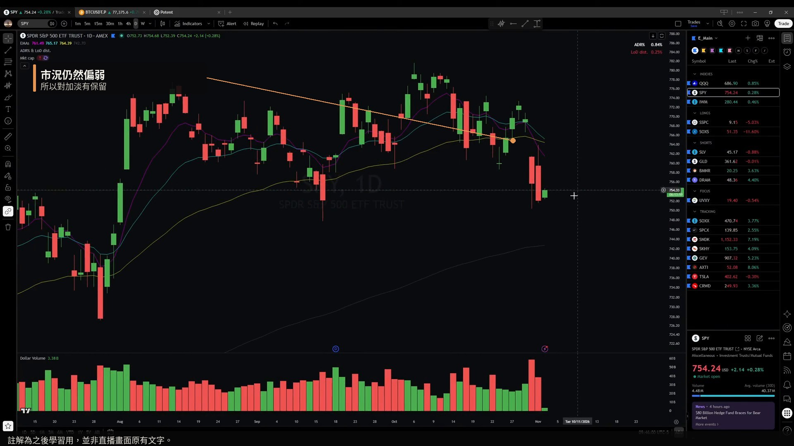

概要
MSTR 可以係淡，但已經有少少向下延伸
23:30 畫面係 MSTR。Whisper 聽成 “MSTR could be a short too”；YouTube 自動字幕則作 “I missed your quick view short too”。本頁按畫面代碼同 Whisper 更正，並喺附註說明分歧。佢話 MSTR 都可以係淡，但而家又覺得有少少向下延伸；雖然當前市況仍然偏弱。24:10 前後切過 SPY 日線，用來對照市況。
圖一 · 主圖
MSTR 日線：可以係淡，但向下已有少少延伸
直播 23:50

原話
MSTR could be a short too. Yeah, but again, right now it's just, I don't know, a little bit extended to the downside, although like the current market condition is pretty weak.
MSTR 都可以係淡。係，但再講多次，而家我唔知，就係有少少向下延伸；雖然當前市況仍然頗弱。
點樣讀
日線見到價格已由高位回落。佢把呢隻讀成也可以淡，但隨即加上「向下已有少少延伸」呢個保留。
「市況仍然偏弱」係背景，唔等於取消咗延伸呢個保留。呢科唔好寫成已經落實嘅淡倉。
圖二
SPY 日線：用來對照市況仍然偏弱
直播 24:10

原話
…although like the current market condition is pretty weak.
……雖然當前市況仍然頗弱。
點樣讀
SPY 日線用嚟對照「市況偏弱」呢句，唔係另外一隻已經決定要淡嘅股票。
附註
注意事項
- YouTube 自動字幕把開首聽成 “I missed your quick view short too”；Whisper 同畫面代碼係 MSTR could be a short too。本頁按 Whisper 同畫面更正。
- 1:25:52 另有一句 “MSTR's pushing into the daily nine”，只有一句、冇再走圖，唔獨立成科。
- 畫面睇唔到成交價、倉位大細或者損益，所以唔寫死呢啲數字。